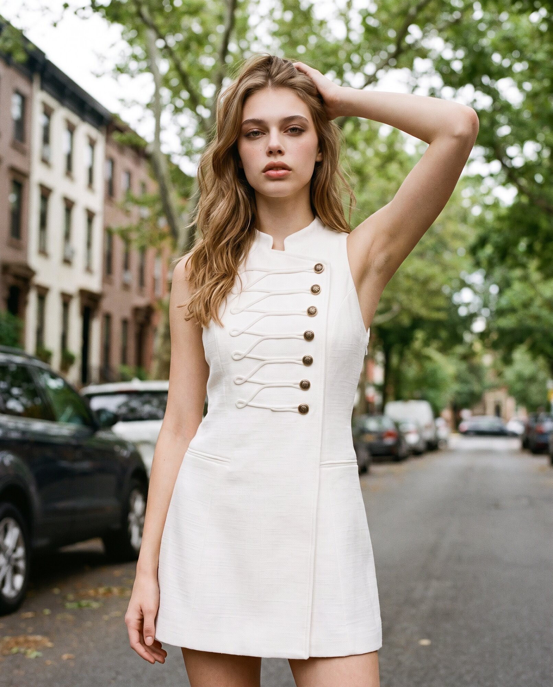
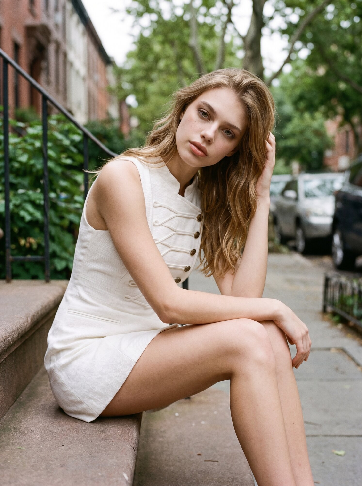
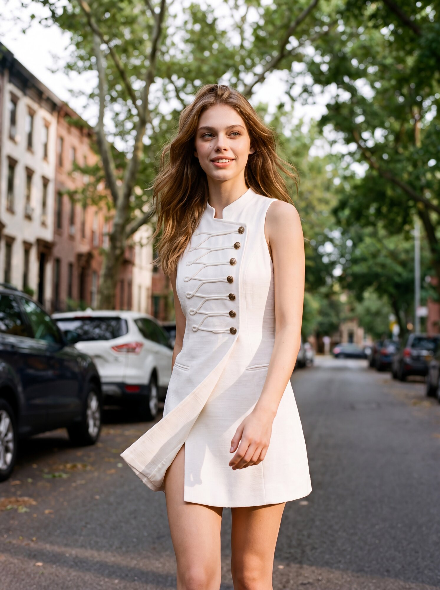
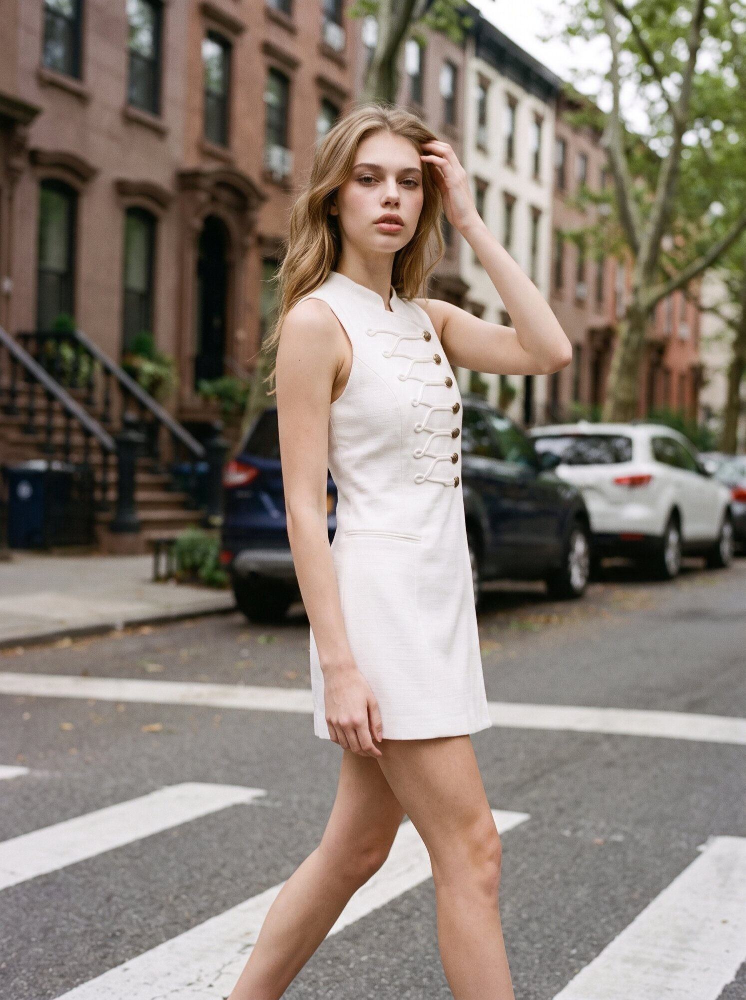
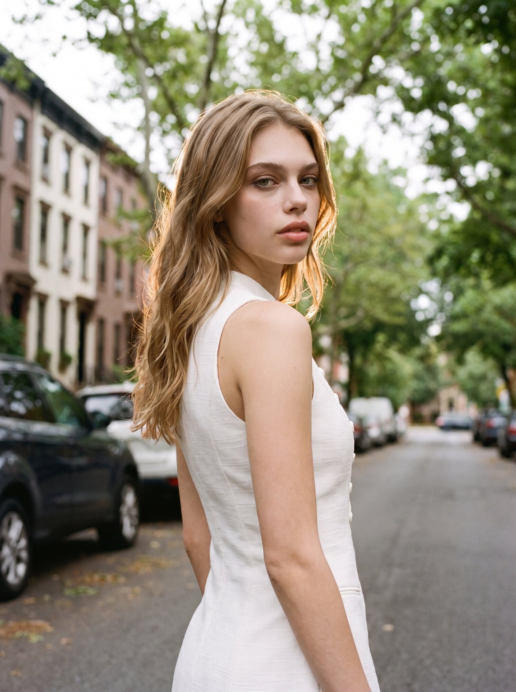
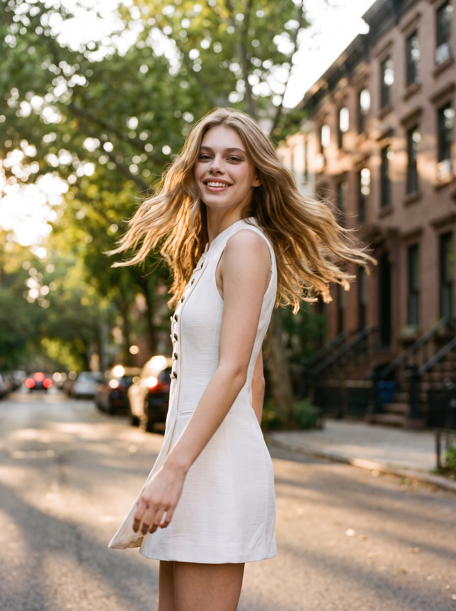

Look 01Brooklyn, NY

Look 02Brooklyn, NY

Look 03Crosswalk

Look 04Street Portrait
Motion — Kling 3.0

Look 05Vintage Sedan

Look 06Golden Hour

Look 07Brownstone Steps

Look 08In Motion

Look 09Closing Frame